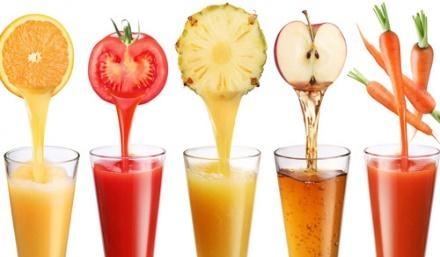
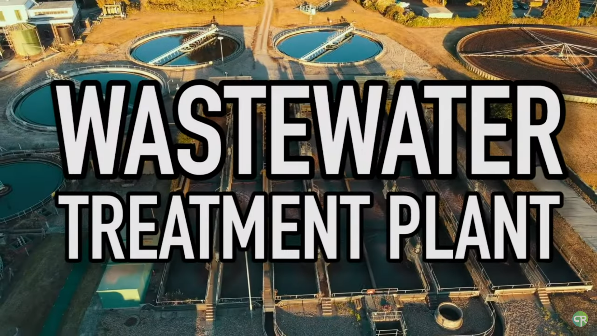

SCIENCE
QUARTER 3 - MODULE 3
WATER CONSERVATION IN BIOLOGY
Grade 9 Quarter 3 – Module 5
Module 5: WATER CONSERVATION IN CHEMISTRY
What I Need To Know?
Learning Competency:
Use information from secondary sources to describe the possible effects of human activities, such as deforestation, pollution, and introduction of invasive species, on living things in an ecosystem.
Hello, Learners! Welcome to this exciting science module where we’ll explore how chemistry can help us save one of the world’s most important resources—water! Water is essential for life, but did you know that we can actually use chemistry to help conserve it? In this module, you'll discover how certain chemical reactions can reduce water use and how green chemistry offers smart ways to treat and reuse wastewater.
In Lesson 1, “Chemistry and Water Usage – Reactions that Save Water,” you’ll learn about water-saving chemical processes that can be used in households and industries. Then in Lesson 2, “Green Chemistry and Treating Wastewater,” we’ll dive into eco-friendly solutions that help clean dirty water so it can be reused safely.
Let’s get started and see how science, especially chemistry, can lead us to a cleaner and more sustainable future!
Objectives:
- Describe how chemistry can be used to conserve water and treat wastewater.
- Value the role of chemistry in solving real-world environmental problems, especially water conservation.
- Demonstrate a simple activity that applies chemistry in conserving or treating water.
What I Know?
Direction: Read and understand the questions below. Write the letter of your best answer on a separate sheet of paper.
- What is the main reason water conservation is important?
a. Water is cheap and easy to get
b. Water is unlimited and always available
c. Freshwater resources are limited
d. Rain always refills water sources - Which area of the house typically uses the most water?
a. Bedroom
b. Bathroom
c. Living room
d. Garage - What does chemistry help us do to reduce water use?
a. Develop water-saving chemical processes
b. Increase evaporation
c. Create more wastewater
d. Stop using soap - Which scenario best reflects the principles of green chemistry in conserving water resources?
a. Replacing traditional paints with water-based paints to reduce VOCs
b. Using more water in cleaning to ensure thorough removal of contaminants
c. Replacing renewable materials with synthetic alternatives for durability
d. Increasing solvent use to make chemical reactions more efficient - What is a benefit of using efficient chemical reactions?
a. They require more cleaning water
b. They increase water waste
c. They are slower than traditional reactions
d. They reduce the need for water and energy
This module explores how chemistry plays an important role in conserving water. You will learn how water is used in households and industries, how chemical reactions and catalysts can help save water, and how green chemistry promotes sustainability. By the end of the module, you should be able to explain how chemistry contributes to addressing water-related problems and conserving this vital resource.
What’s In?
WATER DETECTIVE!
Directions: Look around your house or school and observe how water is used in different places. Fill in the table below with examples. Be creative!
Can I hear your thoughts?
Why do you think it's important to find ways to save water in each of these areas?
What’s New?
WATER DROP WORD HUNTDirections: Below is a Water Drop Word Grid filled with hidden words related to water usage and chemistry. Your task is to find and circle the 10 hidden words. These words are connected to what you’ll learn in this lesson. After finding all the words, choose one word that interests you the most and write a short explanation of what you think it means or how it might relate to saving water.
After you have encircled what words you have found, what can you say about those words?
Pick one word from the puzzle that you find most interesting. Write 1-2 sentences about what you think it means or how it could help conserve water.
MY CHOSEN WORD:
MY IDEA ABOUT IT:
What Is It?
5.1 Importance of Water ConservationWater conservation is important for in order for the planet to sustain its ecosystem and to ensure the continuous accessibility of clean water until future. As worldwide freshwater use has expanded nearly six-fold since 1900, the demand on this critical resource has intensified, leading to substantial water stress in diverse places (Ritchie & Roser, 2024). The largest user of water, the agriculture sector is responsible for a significant number of freshwater withdrawals globally. Effective water management techniques, like drip irrigation, are important for lowering consumption and lessening the negative effects of climate change and droughts on food security.
Additionally, there have been variations in the amount of water used in households; for example, during the COVID-19 pandemic, there was a rise in the amount used because more people were staying at home. This emphasizes how important it is to adopt water-saving practices into daily life and to raise public awareness of them. We can save the energy used for water distribution and treatment, save aquatic habitats, and cut expenses associated with water supply by encouraging conservation initiatives.
5.2 Role of Chemistry in Addressing Water-Related ChallengesChemistry is essential for solving many problems pertaining to water. In order to ensure safe drinking water, it is helpful to understand the composition and quality of the water. Water treatment plants use chemical procedures to clean water sources of pollutants and pathogens. For example, improved oxidation processes can degrade dangerous substances, and chlorination is a common approach used to clean drinking water (Hancock, 2023).
Chemistry also facilitates the development of wastewater treatment technologies like chemical precipitation and membrane filtration, which not only help purify water but also recover valuable materials from wastewater, thus reducing the demand for fresh water (US EPA, 2024).
By understanding the chemical interactions in natural waters, we can better manage ecosystems and mitigate pollution, which is crucial for sustaining water resources.
5.3 Chemical Reactions That Help Save Water
Water conservation is becoming more and more important in many industrial processes, and there are ways to optimize chemical reactions such that they consume less water. Here are a example of these reactions:
1. Enzymatic Reactions
- Enzymes speed up reactions, reducing the time and water needed (e.g., dyeing fabric, juice extraction).

2. Dehydration Synthesis
- Forms larger molecules by releasing water, saving water overall.
3. Hydrolysis
- Water is used to break down compounds, but adjusting the process ensures only the needed amount of water is used.
USING CATALYST TO SAVE WATER IN CHEMICAL REACTIONS
What is a Catalyst?A substance that speeds up a chemical reaction without getting consumed in the process is called a catalyst. This is accomplished by reducing the activation energy, which is the minimum amount of energy required for a reaction to take place (Lerner, 2011).
How Catalysts Help Save Water?- Water as a Safer Medium: Catalysts allow reactions to happen in water instead of harmful organic solvents, making the process safer and more eco-friendly.
- Faster Reactions: Less time means less water is needed for cooling or washing during the process.
- Selective Reactions: Catalysts can target specific products, avoiding unwanted byproducts and reducing the need for additional cleaning or water.
Example:
In water treatment, heterogeneous catalysts help break down pollutants faster, which means quicker purification and less water wasted (US EPA, 2024).
5.5 Wastewater Treatment: How Used Water Gets Clean Again
Wastewater treatment is a critical process that ensures water used in homes and industries is cleaned before being released back into the environment. This process involves several stages designed to remove contaminants and pollutants, making the water safe for discharge or reuse.
Water used at home or in industries goes through several steps before being released or reused:

- Collection – Wastewater comes from homes, factories, and rain.
- Pre-Treatment – Removes large debris using screens.
- Primary Treatment – Solids settle as sludge, which is removed.
- Secondary Treatment – Bacteria and oxygen break down organic waste.
- Tertiary Treatment – Advanced filtering and disinfection (like UV or chlorine) make water safe to release.
How Chemicals Help Clean Wastewater?
Chemicals play a vital role in wastewater treatment by:
- pH Adjustment using acids or bases.
- Phosphate Removal to avoid environmental damage like algal blooms.
- Disinfection with chlorine or ozone to kill germs.
These chemical processes are essential for meeting regulatory standards and ensuring that treated water is safe for discharge into the environment or for reuse.
How to Treat Water at Home
Even at home, simple methods can improve water quality:
| Method | Descriptions |
|---|---|
| Filtration | Use sand, gravel, and charcoal to remove large particles. |
| Boiling | Boil water for at least 1 minute to kill bacteria. |
| SODIS (Solar Disinfection) | Place clear plastic bottles in sunlight for hours — UV rays disinfect the water. |
| Activated Carbon Filters | Removes bad taste, chlorine, and some chemicals from water. |
These are helpful in emergencies and promote sustainability at the household level.
What’s More?
WATER SAVER’S BINGODirections: Engage with this Water Saver’s Bingo challenge by completing any five (5) tasks in a row—across, down, or diagonally. Each square contains a fun task based on what you learned in the lesson. When you finish a row, you win your Water Saver badge!
You may write your answers, draw, or describe your responses below the bingo grid.
What I Have Learned?
GIVE ME MEANING!Direction: Create an acrostic poem using the word "CHEMISTRY" where each letter starts a sentence or phrase that reflects something you’ve learned about water conservation and chemistry.
Each line must:
- Begin with the corresponding letter
- Be related to the lesson
- Show your understanding or reflection
Make it creative, rhyme if you like, and have fun expressing what you’ve learned!
AssessmentDirections: Read and understand each question below. Write the letter of your answer on a separate sheet of paper.
- Why is water conservation important in agriculture?
A. To increase electricity use
B. To reduce labor
C. To lessen climate change effects and secure food supply
D. To use more water from rivers - What is the role of chemistry in wastewater treatment?
A. To remove pollutants using chemical processes
B. To speed up water flow
C. To make water taste better only
D. To collect more taxes - Which of the following best describes a catalyst?
A. A reactant that is used up in a reaction
B. A chemical that slows down a reaction
C. A substance that speeds up a reaction and is not consumed
D. A substance that only reacts with water - What is the purpose of tertiary treatment in wastewater treatment?
A. To boil the water
B. To use sunlight to clean the water
C. To remove solid particles only
D. To disinfect water using chlorine or UV - Which of the following is an example of home-based water treatment?
A. Using pesticides
B. SODIS (solar disinfection)
C. Electrolysis
D. Oil filtration
In Lesson 1, we explored how precious water is and how our everyday actions affect it. This time, let’s dive into the world of green chemistry—a science superhero that helps protect our water without needing a cape! Get ready to discover how simple changes in chemistry can lead to cleaner water and a healthier planet.
What’s In?
I SPY POLLUTION
Directions: Look at the scenarios below and circle which ones could lead to polluted water.
- Brushing teeth while water keeps running
- Pouring cooking oil down the sink
- Using biodegradable dish soap
- Throwing plastic wrappers in the river
- Painting furniture with water-based paint
Which of these surprised you? Which do you see most often in your community?
What’s New?
CHEMIST TIME MACHINEImagine it's the year 2050. You’re a famous eco-scientist! You're being interviewed by an environmental news channel.
Write your answers to these questions:
- What amazing product did you invent that saves water?
- How does your invention use green chemistry?
- What do people say about how it helps the planet?
Be as creative and futuristic as you like! (Yes, even talking plants are welcome!)
GREEN CHEMISTRY AND ITS ROLE IN WATER CONSERVATION
4.2.1 What is Green Chemistry?A scientific method known as "green chemistry" aims to create chemical products and processes with as little or no usage of dangerous materials as possible. It includes a set of guidelines aimed at lessening the negative effects on the environment, improving safety, and advancing sustainability in the production and use of chemicals. Green chemistry makes a substantial contribution to preserving water resources and preserving water quality by stopping pollution at its source.
Green chemistry is the design of chemical products and processes that reduce or eliminate the use or generation of hazardous substances. Green chemistry applies across the life cycle of a chemical product, including its design, manufacture, use, and ultimate disposal.
Green chemistry aids in water conservation through various mechanisms:
- Reduction of Water Usage: Many green chemistry processes are designed to require less water than traditional methods. For instance, supercritical CO₂ cleaning technologies can replace water in cleaning applications, saving millions of gallons daily.
- Minimization of Contaminants: By using safer chemicals and processes, green chemistry reduces the release of harmful substances into water systems, thus improving overall water quality.
- Sustainable Water Treatment: Green chemistry approaches to water purification involve biological agents and eco-friendly technologies that are more efficient than conventional methods. This reduces the need for extensive water treatment processes that consume large amounts of water.
- Eco-Friendly Cleaning Products: Many cleaning products now use less water in their formulations or utilize supercritical CO₂ instead of traditional solvents.
- Water-Based Paints and Coatings: These products replace solvent-based formulations, significantly reducing the amount of volatile organic compounds (VOCs) released into the environment.
- Biodegradable Detergents: These detergents are designed to break down more quickly in the environment, reducing pollution and conserving water during washing processes.
What’s More?
ECO-PRODUCT MAKEOVERDirections: Pick one household product you use often (ex: shampoo, dishwashing soap, or paint). Imagine you are tasked with making a green version of it. Fill in the makeover card below!
What I Have Learned?
SUPERGREEN CHEMHERODirections:
In this activity, you’ll create your own Green Chemistry Superhero! This superhero will help save water and protect the environment using green chemistry.
Steps:
- Give your superhero a name that reflects their powers (e.g., Captain Clean, Aqua Guardian).
- Draw your superhero (it can be a simple sketch or doodle).
- Write a short story (4-5 sentences) about your superhero's mission to help save water. Include:
- What green chemistry power your superhero uses (like supercritical CO₂ cleaning, biodegradable detergents, or water-based paints).
- How your superhero uses this power to save water or reduce pollution.
- A catchphrase your superhero would say when saving the planet (e.g., “Save water, save the world!”).
Directions: Read and understand each question below. Write the letter of your answer on a separate sheet of paper.
- What is green chemistry mainly focused on?
a. Making water taste better
b. Designing safe and eco-friendly chemicals
c. Mixing colorful substances
d. Creating explosions in labs - Which of these is an example of green chemistry?
a. Burning plastics
b. Flushing old medicines down the toilet
c. Washing with chemical bleach
d. Using supercritical CO₂ for cleaning - What does “biodegradable” mean?
a. Smells nice
b. Can be eaten
c. Breaks down safely in nature
d. Changes color when used - Why are water-based paints better for the environment?
a. They smell stronger
b. They are cheaper
c. They dry too fast
d. They release fewer harmful substances - Which process uses less water than traditional cleaning?
a. Steam ironing
b. Supercritical CO₂ cleaning
c. Rain collection
d. Soap scrubbing
References
Basics of Green Chemistry | US EPA. (2024, May 2). US EPA. https://www.epa.gov/greenchemistry/basics-green-chemistry
Everflow - Which industries use the most water and why. (n.d.-b). https://everflowutilities.com/blogs/which-industries-use-the-most-water-and-why
Hancock, N. (2023b, September 16). Water consumption — Safe drinking water foundation. Safe Drinking Water Foundation. https://www.safewater.org/fact-sheets-1/2017/1/23/water-consumption
Hjeresen, D. J. (2004). Green chemistry: the impact on water quality and supplies. Water and Sustainable Development - NCBI Bookshelf. https://www.ncbi.nlm.nih.gov/books/NBK83730/
How we use water | US EPA. (2024, September 12). US EPA. https://www.epa.gov/watersense/how-we-use-water
Kitanosono, T., Masuda, K., Xu, P., & Kobayashi, S. (2017). Catalytic Organic Reactions in Water toward Sustainable Society. Chemical Reviews, 118(2), 679–746. https://doi.org/10.1021/acs.chemrev.7b00417
Libretexts. (2023, July 7). 14.7: Catalysis. Chemistry LibreTexts. https://chem.libretexts.org/Bookshelves/General_Chemistry/Map:_Chemistry_-_The_Central_Science_(Brown_et_al.)/14:_Chemical_Kinetics/14.07:_Catalysis
Louise Lerner. (2011). 7 things you may not know about catalysis. Argonne National Library. https://www.anl.gov/article/7-things-you-may-not-know-about-catalysis
Lumen Learning & OpenStax. (n.d.). Water | BIO103: Human Biology. https://courses.lumenlearning.com/suny-dutchess-ap1/chapter/water-2/
Netherlands, S. (2022b, March 22). Households used more water in 2020, companies less. Statistics Netherlands. https://www.cbs.nl/en-gb/news/2022/12/households-used-more-water-in-2020-companies-less
Peake, B. M., Braund, R., Tong, A. Y., & Tremblay, L. A. (2016). Green chemistry, green pharmacy, and life-cycle assessments. In Elsevier eBooks (pp. 229–242). https://doi.org/10.1016/b978-1-907568-25-1.00008-6
Ritchie, H., & Roser, M. (2024b, February 27). Water use and stress. Our World in Data. https://ourworldindata.org/water-use-stress
The basic processes of waste water treatment. (n.d.). Aerzen Relaunch. https://www.aerzen.com/applications/water-and-waste-water-treatment/adviser/processes-of-waste-water-treatment
The Wastewater Treatment Process. (n.d.). Cole-Parmer. https://www.coleparmer.com/tech-article/eight-stages-of-wastewater-treatment-process
Wastewater treatment process. (2024, September 20). https://www.gustawater.com/blog/wastewater-treatment-process.html
Zymvol. (2024b, May 24). 3 Ways Enzymes are Saving Water Everyday | ZYMVOL. Zymvol. https://zymvol.com/2024/05/27/3-ways-enzymes-are-saving-water-everyday/
Answer Key:
What I Know
- C. Freshwater resources are limited
- B. Bathroom
- A. Develop water-saving chemical processes
- A. Replacing traditional paints with water-based paints to reduce VOCs
- D. They reduce the need for water and energy
Lesson 1
What’s New
Word Bank:
❖ Chemistry
❖ Reaction
❖ Water
❖ Catalyst
❖ Save
❖ Green
❖ Energy
❖ Treatment
❖ Reuse
❖ Efficient
Assessment
- C. To lessen climate change effects and secure food supply
- A. To remove pollutants using chemical processes
- C. A substance that speeds up a reaction and is not consumed
- D. To disinfect water using chlorine or UV
- B. SODIS (solar disinfection)
Lesson 2
Assessment
- B. Designing safe and eco-friendly chemicals
- D. Using supercritical CO₂ for cleaning
- C. Breaks down safely in nature
- D. They release fewer harmful substances
- B. Supercritical CO₂ cleaning